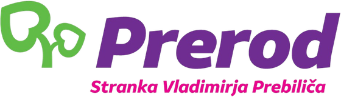

Svet ČS Bežigrad 2026–2030, volilna enota 01 · testna različica
Testna različica – ni objavljeno. To ni javna stran zavez; je skrit predogled.
Liste brez mandata skupaj · neuradni izid, 18. 11. 2026 ob 8.00
8 list · brez sedeža · 1.763 glasov · 14,0 %
Izvoljene liste skupaj: 7 list, 17 sedežev, 10.847 glasov (86,0 %). Vse liste skupaj: 15 list, 12.610 glasov (100 %). Delež je delež vseh veljavnih glasov za liste v volilni enoti 01.
Stran prikazuje neuradne izide osmih list, ki v svetu ČS Bežigrad nimajo mandata, in njihov odgovor na vprašanje, ali se bodo za Savsko naselje trudile tudi, če ne bodo izvoljene. Izvoljene liste so na ločeni strani. Liste so obravnavane enakovredno in niso ocenjene ali razvrščene. Vrstni red je enak zaporednim številkam na glasovnici za volilno enoto 01, ne po številu glasov. Odgovori so odgovori list, ne osebni odgovori kandidatov, v izvirnem besedilu, kot so ga liste same napisale.
Posodobljeno 18. 11. 2026 (Europe/Ljubljana). Izidi volitev so neuradni. Vir mandatov in glasov: Volilna komisija MOL (Lokalne volitve 2026), prek portala DVK, stanje 18. 11. 2026 ob 8.00 (Europe/Ljubljana). Uradno poročilo Volilne komisije MOL pričakujemo okoli 20. do 25. 11. 2026.
1. Glasovi
Volitve v svet ČS Bežigrad so bile v nedeljo, 15. 11. 2026, volilna enota 01. Osem list brez mandata je skupaj dobilo 1.763 od 12.610 glasov za liste (14,0 %).
Neuradni izid, stanje 18. 11. 2026 ob 8.00
Vir izidov: Volilna komisija MOL, stran Lokalne volitve 2026, ki povezuje na portal DVK. Številke so iz izvoza za MOL, zavihek »Četrtna skupnost Bežigrad«, stanje 18. 11. 2026 ob 8.00 (Europe/Ljubljana).
To je neuradni izid. Uradno poročilo Volilne komisije MOL pričakujemo okoli 20. do 25. 11. 2026.
Glasovi po listah
Na ožjem zaslonu preglednico povlecite vstran. Vrstni red je enak glasovnici (VE 01), ne po številu glasov. Delež je izračunan od vseh 12.610 glasov za liste.
Neuradni izid volitev v svet ČS Bežigrad, stanje 18. 11. 2026 ob 8.00
Št.
Lista
Glasovi
Delež
Mandati
2.
Slovenska ljudska stranka
98
0,8 %
0
3.
Demokrati. Anžeta Logarja
183
1,5 %
0
6.
Prerod – stranka Vladimirja Prebiliča
166
1,3 %
0
8.
Vesna – zelena stranka
337
2,7 %
0
9.
Nova Slovenija in Fokus
366
2,9 %
0
10.
Socialni demokrati
410
3,3 %
0
12.
Stranka Straža – katoliška narodna stranka
59
0,5 %
0
14.
Državljansko gibanje Resni.ca
144
1,1 %
0
Skupaj liste brez mandata
1.763
14,0 %
0
Vse liste (15)
12.610
100 %
17
2. Po listah
Vrstni red je enak zaporednim številkam na glasovnici (volilna enota 01), ne po številu glasov. Pri vsaki listi je njen odgovor na vprašanje iz zavez: »Če ne boste izvoljeni v svet ČS, se boste še vseeno trudili za Savsko naselje — in kaj boste naredili v tem primeru?« Razlage so v izvirnem besedilu, kot so ga liste same napisale. Odgovor liste ni osebni odgovor kandidata.
183 glasov (1,5 %). Neuradni izid, stanje 18. 11. 2026 ob 8.00.
Delo tudi, če ne bodo izvoljeni
Brez odgovora
Lista zavez ni oddala.
6.

Prerod – stranka Vladimirja Prebiliča brez mandata
166 glasov (1,3 %). Neuradni izid, stanje 18. 11. 2026 ob 8.00.
Delo tudi, če ne bodo izvoljeni
Da
Da, vsekakor. Naša zavzetost za Savsko naselje ni vezana na izvolitev. Še naprej bomo zbirali pobude sosedov, jih posredovali svetu četrtne skupnosti in mestni občini ter vztrajali pri odgovorih in rešitvah. Pred začetkom kampanje smo med občani izvedli anketo o tem, kakšno prihodnost si želijo za Ljubljano. Tudi s tem pristopom bomo nadaljevali tudi v prihodnje, saj želimo resnično slišati ljudi. Sodelovali bomo pri skupnostnih akcijah in povezovali ljudi, ki želijo prispevati k bolj urejenemu, varnemu in prijetnemu naselju. Funkcija lahko pri tem pomaga, veliko pa lahko naredimo tudi kot aktivni občani.
337 glasov (2,7 %). Neuradni izid, stanje 18. 11. 2026 ob 8.00.
Delo tudi, če ne bodo izvoljeni
Da
Spodbujali bomo oblikovanje skupnostnih iniciativ in pomagali s svojim znanjem pri spodbujanju demokratičnega delovanja ČS in preprečevanju samovolje posmeznikov.
366 glasov (2,9 %). Neuradni izid, stanje 18. 11. 2026 ob 8.00.
Delo tudi, če ne bodo izvoljeni
Brez oznake na izbiro da / delno / ne. Lista je oddala pojasnilo:
Seveda. Moja skrb za Savsko naselje ni vezana na članstvo v svetu ČS, kot tudi moje delo ni vezano samo na Savsko naselje. Po svojih močeh, znanju bom iskala rešitve.
410 glasov (3,3 %). Neuradni izid, stanje 18. 11. 2026 ob 8.00.
Delo tudi, če ne bodo izvoljeni
Brez oznake na izbiro da / delno / ne. Lista je oddala pojasnilo:
Spremljali bomo potrebe in se vključevali v civilne iniciative za izboljšanje pobojev za bivanje otrok, mladih in starejših prebivalcev v SN in v ČS Bežigrad, kjer prebivamo v različnih naseljih.
12. Stranka Straža – katoliška narodna stranka brez mandata
59 glasov (0,5 %). Neuradni izid, stanje 18. 11. 2026 ob 8.00.
Delo tudi, če ne bodo izvoljeni
Da
Moj boj ni le ta mesec do volitev ampak vsak dan mojega življenja! Z zgledom skrbim za okolje, vzgajam svoje bližnje v vzorne sokrajane in spodbujam k udejstvovanju v prostovoljnih organizacijah za sopomoč ljudem!
144 glasov (1,1 %). Neuradni izid, stanje 18. 11. 2026 ob 8.00.
Delo tudi, če ne bodo izvoljeni
Brez odgovora
Lista zavez ni oddala.
3. Kako se lahko vključijo
Spodnje poti veljajo enako za vse liste in za prebivalce. Nikogar ne izpostavljamo in nikogar ne spregledamo. Če bomo pošiljali vabilo, gre z istim besedilom prek vseh 15 list.
Zunanji člani odborov mestnega sveta MOL
Mestni svet lahko imenuje člane odborov tudi izmed občanov, ki niso mestni svetniki, vendar največ polovico članov (30. člen Statuta MOL). Z novim mandatom članom vseh delovnih teles preneha mandat, zato jih bo novi mestni svet imenoval na novo (14. člen Poslovnika Mestnega sveta MOL). Kdo predlaga zunanje člane, v poslovniku ne piše; postopek predlaganja še preverjamo pri službi mestnega sveta.
Zbori občanov in predstavniki ČS
Svet četrtne skupnosti lahko skliče zbor občanov. ČS ima pravico do svojih predstavnikov v posvetovalnih telesih in delovnih skupinah MOL.
Odprte delovne skupine po temah iz ankete
Predlog so odprte delovne skupine za teme, ki so jih prebivalci v anketi izpostavili: parkiranje in promet, pošta in storitve, zelenje, »Igle in droge, varnost« in drugo. Vanje se lahko enako prijavijo vse liste in prebivalci.
Posvoji pobudo
Kdor želi, lahko spremlja posamezno temo ali žarišče in preverja, ali MOL drži obljube, zapisane na portalu pobud.
Odgovor na vprašanje o delu tudi, če ne bodo izvoljeni: oddane zaveze list (polje zakaj-3), v izvirnem besedilu. Javne strani zavez: anketa.savska.org/zaveze.
Neuradni izid, stanje 18. 11. 2026 ob 8.00 (Europe/Ljubljana): Volilna komisija MOL, Lokalne volitve 2026, prek portala DVK, izvoz za MOL, zavihek »Četrtna skupnost Bežigrad«. Uradno poročilo Volilne komisije MOL pričakujemo okoli 20. do 25. 11. 2026.
To je testna različica in ni objavljena. Imena lastnikov, zasebni kontakti in drugi zasebni podatki na strani niso prikazani.
 Slovenska ljudska stranka brez mandata
Slovenska ljudska stranka brez mandata Nova Slovenija in Fokus
Nova Slovenija in Fokus  Socialni demokrati
Socialni demokrati  Stranka Straža – katoliška narodna stranka
Stranka Straža – katoliška narodna stranka